01
01
Goodbye To Love
American Music Club – If I Were A Carpenter (1994)
orig. The Carpenters
 02
02
Plain As Your Eyes Can See
Acetone – Light in the Attic & Friends (2023)
orig. Jim Sullivan
 03
03
How Could You Let Me Go
Vashti Bunyan; Devendra Banhart – Light in the Attic & Friends (2023)
orig. Lynn Castle
 04
04
Natural Light
Sun Kil Moon – I'll Be There (2010)
orig. Casiotone For The Painfully Alone
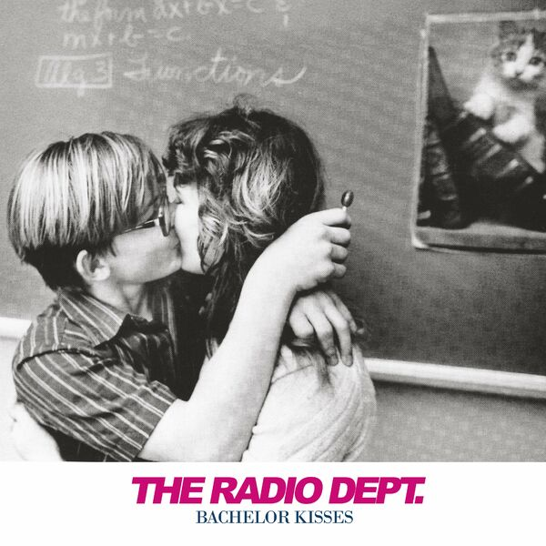
05Bachelor Kisses
The Radio Dept. – Bachelor Kisses (2007)
orig. The Go-Betweens
 06
06
Computer Love
Glass Candy – B/E/A/T/B/O/X (2007)
orig. Kraftwerk
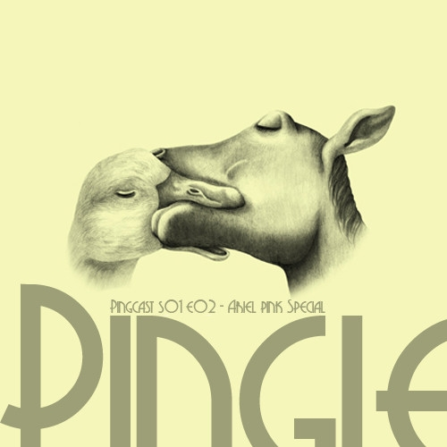
07Are You Gonna Look After My Boys
Waskerley Way – Pinglewood's Ariel Pink Special - Soundtrack EP (2010)
orig. Ariel Pink's Haunted Graffiti
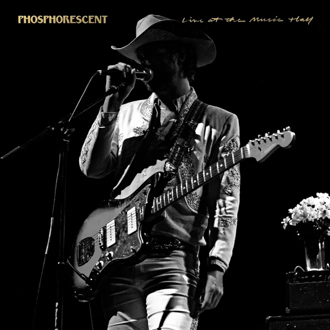
08You've Lost That Lovin' Feelin'
Phosphorescent – Live (2006)
orig. Righteous Brothers
 09
09
Rainy Days And Mondays
Cracker – If I Were A Carpenter (1994)
orig. The Carpenters
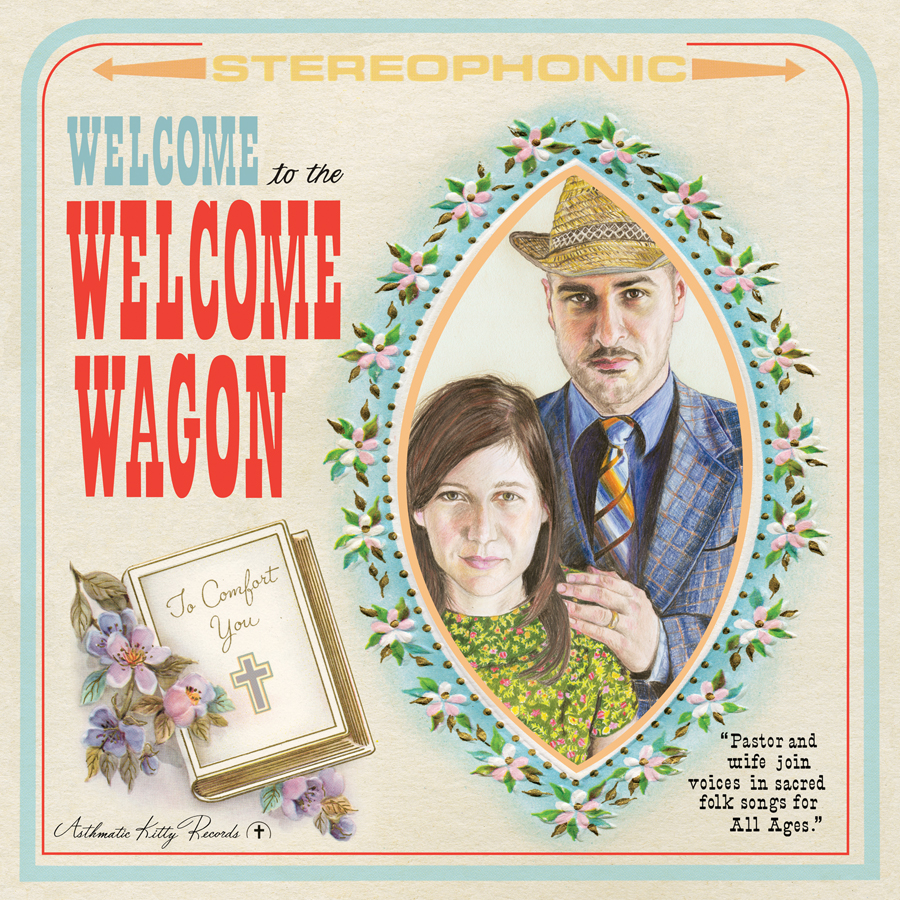
10Half A Person
The Welcome Wagon – Welcome To The Welcome Wagon (2008)
orig. The Smiths
 11
11
My Boys
Taken By Trees – East of Eden (2009)
orig. Animal Collective
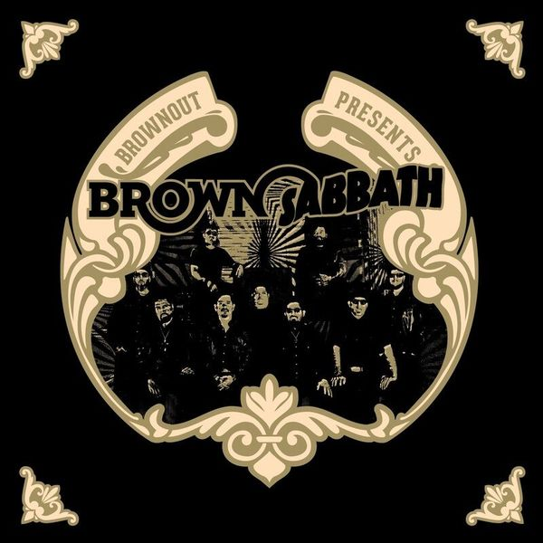
12Planet Caravan
Brownout – Brownout Presents Brown Sabbath (2014)
orig. Black Sabbath
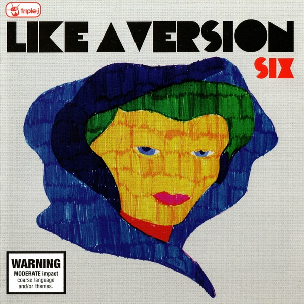
13Boy From School
Grizzly Bear – B-Sides & Demos (2010)
orig. Hot Chip
 14
14
Foreground
Memoryhouse – Foreground (2010)
orig. Grizzly Bear
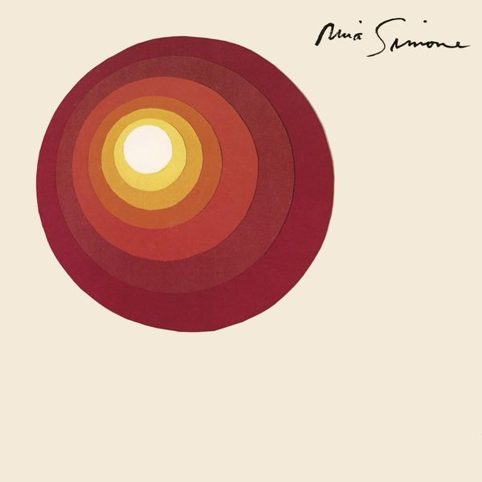
15Mr. Bojangles
Nina Simone – Here Comes The Sun (2012)
orig. Jerry Jeff Walker
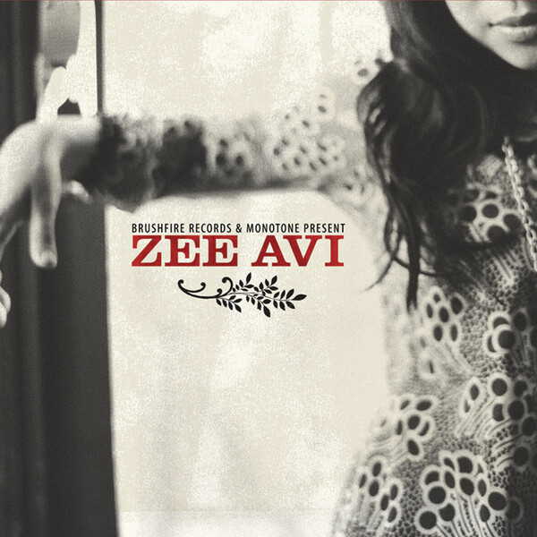
16First Of The Gang To Die
Zee Avi – Zee Avi (2009)
orig. The Smiths
17
Ain't No Sunshine
Idiot Glee – Let's Get Down Together (2011)
orig. Bill Withers
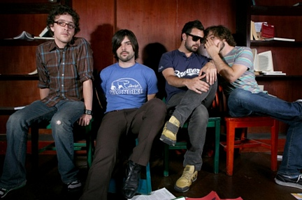
18More Than This
Division Day – Covers/Remixes (2008)
orig. Roxy Music
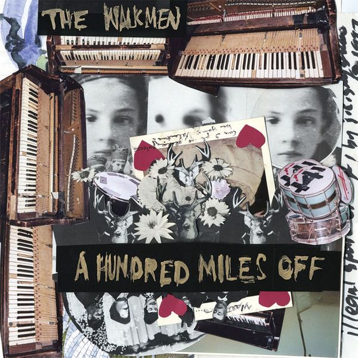
19Another One Goes By
The Walkmen – A hundred miles off (2006)
orig. Mazarin
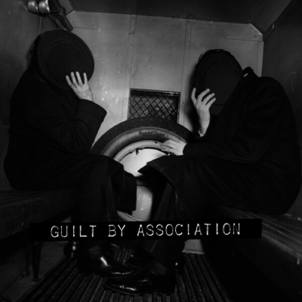
20Straight Up
Luna – Guilt By Association (2007)
orig. Paula Abdul
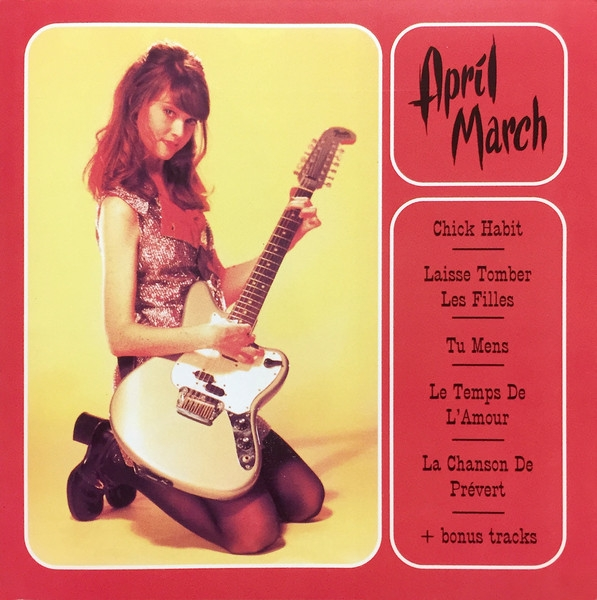
21Cet Air-La
April March – Chick Habit (1995)
orig. France Gall
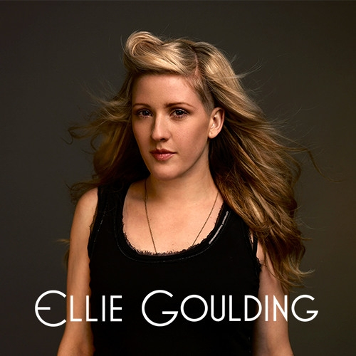
22The Wolves (Act I and II)
Ellie Goulding – Internet Single (2009)
orig. Bon Iver
 23
23
Ain't No Sunshine
The Equatics – Doin It!!!! (1972)
orig. Bill Withers
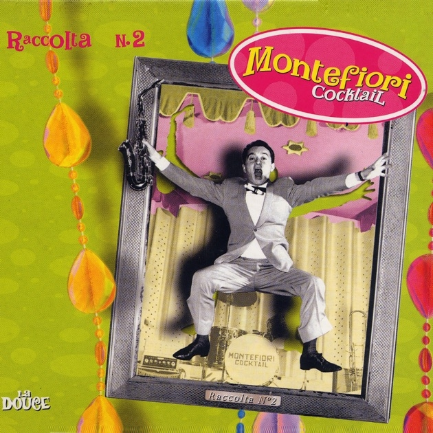
24Sunny
Montefiori Cocktail – 99 Best Covers Ever (II) - Crazy - 067 Re-Shaken (2002)
orig. Bobby Hebb
 25
25
Martha My Dear
Vashti Bunyan & Max Richter – Mojo Presents The White Album Recovered No. 0000001 (2008)
orig. The Beatles
 26
26
Borderline
The Chapin Sisters – Through the Wilderness: A Tribute to Madonna (2007)
orig. Madonna
 27
27
Two Weeks
Ruby Weapon – c o v e r r s (2007-2015) (2020)
orig. Grizzly Bear
28
Who Doesn't Love (Sugar, Sugar) (orig. The Archies)
Sinn Sisamouth – Cambodian Rocks Volumes 1- 4 (Remastered) (2016)